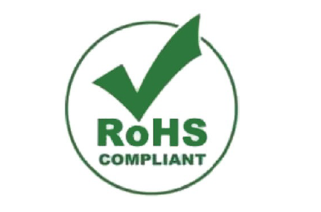

Hoy en día se están consumiendo más dispositivos y productos electrónicos que el año pasado y el año que viene se prevé que se consuman más que este año. Eso quiere decir que los metales pesados y sustancias químicas tóxicas que contienen se van multiplicando paulatinamente en nuestro entorno y, por lo tanto, deberían ser reciclados.
En Europa, desde hace tiempo (febrero de 2003), la directiva RoHS (Restriction of Hazardous Substances) restringe el uso de ciertas sustancias peligrosas en todo tipo de aparatos electrónicos y eléctricos. Eso quiere decir que se prohíbe o limita el uso de metales pesados como plomo, cadmio, retardantes de la llama como los PBB o PBDE, mercurio, cromo hexavalente, etc.
Muchos fabricantes se han sensibilizado y están cambiando productos contaminantes de sus dispositivos por otros que lo son menos. El plomo de las soldaduras, por ejemplo, ya se erradicó hace tiempo.

El reto de este ciclo consumista es poder reciclar el máximo posible de estos subproductos de los dispositivos electrónicos.
Cuanto mayor es el porcentaje de producto reciclado, mejor. El objetivo es que no vayan a un vertedero y se incineren, como se hacía antiguamente.